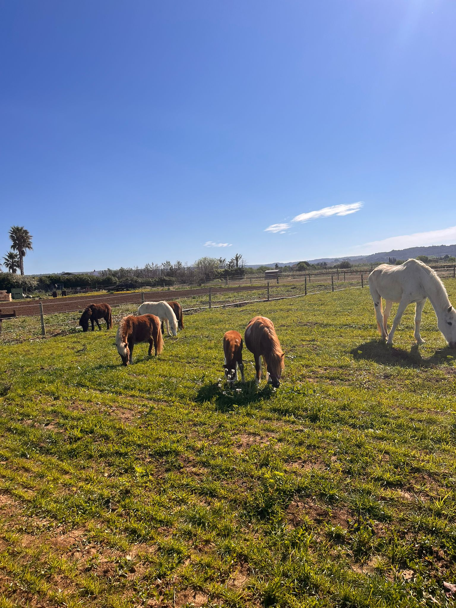
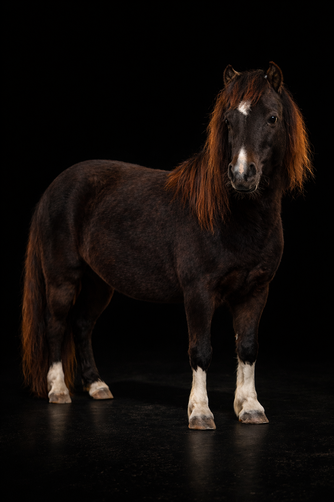
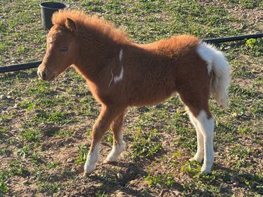
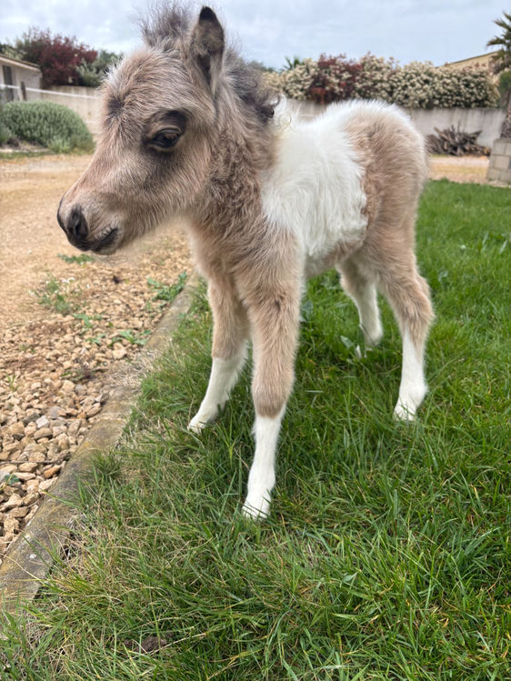
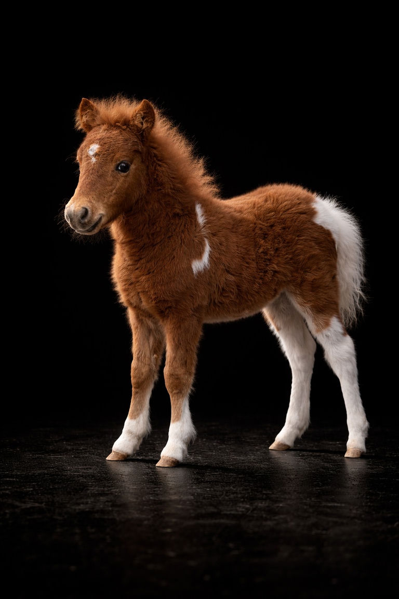
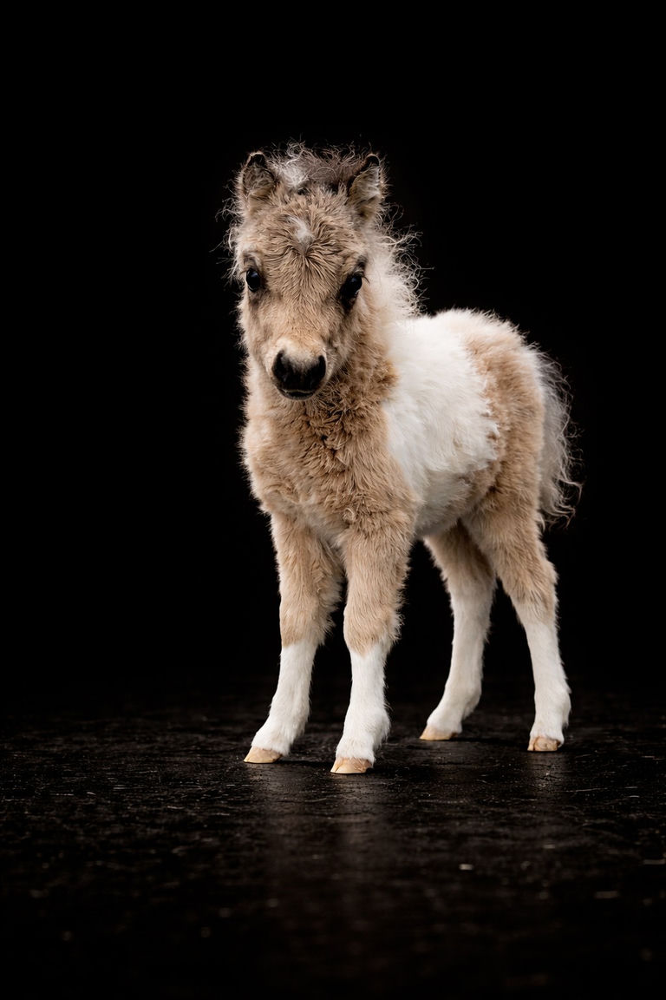

Macchiato
Notre étalon reproducteur, figure de proue de l'élevage. Conformation irréprochable, tempérament équilibré et lignée américaine prestigieuse — le socle génétique de l'Arche du Négadis.
Découvrir MacchiatoRaffinement, génétique de prestige et passion au cœur de l'Hérault. Élevage certifié AMHA & AMHR.
Au cœur de la garrigue héraultaise, l'Arche du Négadis est bien plus qu'un élevage : c'est un projet de vie né d'une passion absolue pour le cheval miniature américain dans sa forme la plus accomplie. Chaque sujet est sélectionné avec une rigueur guidée par les standards internationaux AMHA & AMHR, garantissant une conformation exemplaire, un équilibre parfait et des qualités de caractère irréprochables.
Notre philosophie repose sur trois piliers indissociables : l'excellence génétique, le bien-être absolu de l'animal, et la transparence envers les acquéreurs. Tous nos reproducteurs sont testés ACAN (dépistage du nanisme chondrodysplasique), garantissant des lignées saines, sûres et responsables.
Notre histoire et nos valeurs
Nos reproducteurs incarnent l'idéal de la race : conformité aux standards, équilibre parfait des proportions et tempérament de champion — héritage des plus grandes lignées américaines.
Notre étalon reproducteur, figure de proue de l'élevage. Conformation irréprochable, tempérament équilibré et lignée américaine prestigieuse — le socle génétique de l'Arche du Négadis.
Découvrir Macchiato
Nos juments reproductrices sont sélectionnées pour leurs qualités morphologiques exceptionnelles et leur profil génétique vérifié. L'alliance de la beauté, de la santé et du caractère.
Nos JumentsDes infrastructures haut de gamme au cœur de la garrigue héraultaise. Box spacieux, paddocks enherbés, soins quotidiens rigoureux et suivi personnalisé de vos compagnons.
En savoir plusVivez une expérience unique au rythme de l'élevage. Nos hébergements de charme vous offrent une immersion authentique dans l'univers de l'Arche du Négadis, entre garrigue et chevaux miniatures.
RéserverL'excellence ne s'arrête pas aux chevaux. Retrouvez sur notre site dédié nos lignées de Braque de Weimar, chiens de chasse et de compagnie aux qualités caractérielles et morphologiques remarquables.
Visiter le site ↗Découvrez le quotidien vivant de l'élevage : naissances, seasons, moments de complicité entre humains et chevaux miniatures.




Les réponses aux questions que se posent toutes les familles et passionnés avant de se lancer dans l'aventure du miniature.
C'est la confusion la plus fréquente. Morphologiquement, le cheval miniature américain n'est pas un poney. Là où le poney est souvent trapu, le miniature possède les proportions, l'élégance et la finesse d'un cheval de sang en réduction. À l'Arche du Négadis, nous sélectionnons des lignées AMHA pour leur allure de « pur-sang miniature ».
Le miniature est réputé pour être extrêmement proche de l'homme. Nos chevaux sont sélectionnés pour leur douceur et leur grande intelligence. Ils sont curieux, affectueux et apprennent très vite, ce qui en fait des compagnons exceptionnels pour la famille ou pour des projets de médiation animale.
Non. Malgré sa force, le cheval miniature (moins de 86 cm) n'est pas conformé pour porter le poids d'un cavalier sur son dos. En revanche, c'est un athlète redoutable pour l'attelage, le travail à pied (agility), ou la présentation en show (Halter). C'est un partenaire de sport et de loisir que l'on mène en main ou en voiture légère.
Bien qu'ils soient petits, ce sont de vrais chevaux qui ont besoin de vivre en extérieur. Un minimum de 1 000 m² à 2 000 m² pour un duo est conseillé. Le miniature est un animal très sociable qui ne peut pas vivre seul ; il a besoin de la compagnie d'un congénère pour son équilibre mental.
C'est un engagement de longue durée. Avec une alimentation adaptée et des soins réguliers, un cheval miniature peut vivre entre 25 et 30 ans. C'est une longévité souvent supérieure à celle des chevaux de grande taille.
Son entretien est comparable à celui d'un grand cheval (parage des sabots, vaccins, vermifuges), mais avec des besoins en fourrage réduits. Le point de vigilance principal est son alimentation : étant très rustique, il faut surveiller son poids pour éviter la fourbure. Nous vous accompagnons avec des conseils personnalisés lors de chaque adoption.
Nous répondons à chaque demande avec attention. Chaque acquéreur, chaque propriétaire de pension ou chaque voyageur mérite un accueil à la hauteur de notre élevage.
Nous contacter